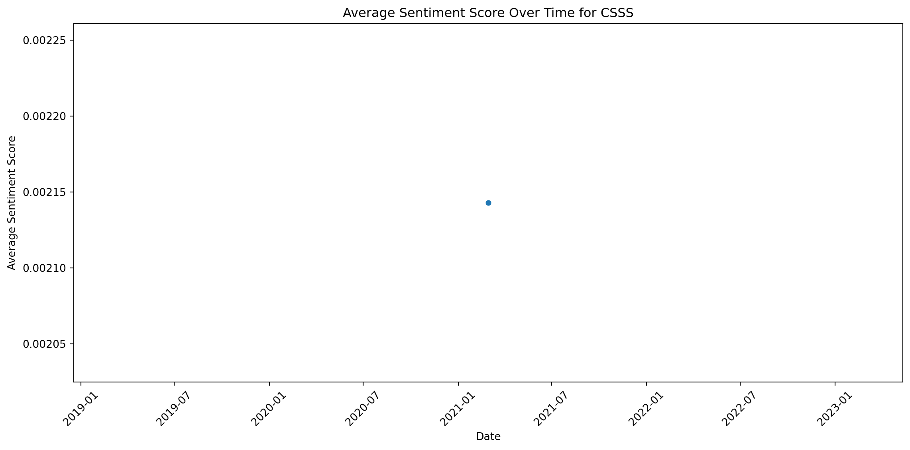

In this lab, our case study walkthrough is guided by my colleague Josh Rosenberg’s article, Advancing new methods for understanding public sentiment about educational reforms: The case of Twitter and the Next Generation Science Standards. We will focus on conducting a very simplistic “replication study” by comparing the sentiment of tweets about the Next Generation Science Standards (NGSS) and Common Core State Standards (CCSS) in order to better understand public reaction to these two curriculum reform efforts. I highly recommend you watch the quick 3-minute overview of this work at https://stanford.app.box.com/s/i5ixkj2b8dyy8q5j9o5ww4nafznb497x
1.1 Walkthrough Focus
For Lab 2, our focus will be on analyzing data from NGSS and CSSS posts and using sentiment lexicons to help gauge public opinion about those posts.
Our Lab 2 walkthrough will cover the following topics:
Prepare: Prior to analysis, it’s critical to understand the context and data sources you’re working with so you can formulate useful and answerable questions. We’ll take a quick look at Dr. Rosenberg’s study as well as our datasets of interest .
Wrangle: In section 2 we revisit tidying and tokenizing text from Lab 1, and learn some new functions for get sentiment values to our tweets VADER sentiment lexicons.
Explore: In section 3, we use simple summary statistics and basic data visualization to compare sentiment between NGSS and CCSS tweets.
Model: While we won’t leverage modeling approaches until Lab 3, we will examine the mixed effects model used by Rosenberg et al. to analyze the sentiment of tweets.
Communicate: Finally, we’ll create a basic presentation, report, or other data product for sharing findings and insights from our analysis.
2 PREPARE
To help us better understand the context, questions, and data sources that we will be using in Lab 2, this section will focus on the following topics:
Context. We take a quick look at the Rosenberg et al. (2021) article, Advancing new methods for understanding public sentiment about educational reforms, including the purpose of the study, questions explored, and findings.
Questions. We’ll formulate some basic questions that we’ll use to guide our analysis, attempting to replicate some of the findings by Rosenberg et al.
Set up. We will set up a “home’ environment for the files and codes for lab 2.
2.1 a. Some Context
2.1.1Twitter (Now known as X) and the Next Generation Science Standards
While the Next Generation Science Standards (NGSS) are a long-standing and widespread standards-based educational reform effort, they have received less public attention, and no studies have explored the sentiment of the views of multiple stakeholders toward them. To establish how public sentiment about this reform might be similar to or different from past efforts, we applied a suite of data science techniques to posts about the standards on Twitter from 2010-2020 (N = 571,378) from 87,719 users. Applying data science techniques to identify teachers and to estimate tweet sentiment, we found that the public sentiment towards the NGSS is overwhelmingly positive—33 times more so than for the CCSS. Mixed effects models indicated that sentiment became more positive over time and that teachers, in particular, showed a more positive sentiment towards the NGSS. We discuss implications for educational reform efforts and the use of data science methods for understanding their implementation.
Data Source & Analysis
Similar to what we’ll be learning in this walkthrough, Rosenberg et al. used publicly accessible data from Twitter collected using the Full-Archive Twitter API and the rtweet package in R. Specifically, the authors accessed tweets and user information from the hashtag-based #NGSSchat online community, all tweets that included any of the following phrases, with “/” indicating an additional phrase featuring the respective plural form: “ngss”, “next generation science standard/s”, “next gen science standard/s”.
Unlike this walkthrough, however, the authors determined Tweet sentiment using the Java version of SentiStrength to assign tweets to two 5-point scales of sentiment, one for positivity and one for negativity, because SentiStrength is a validated measure for sentiment in short informal texts (Thelwall et al., 2011). In addition, we used this tool because Wang and Fikis (2019) used it to explore the sentiment of CCSS-related posts. We’ll be using the AFINN sentiment lexicon which also assigns words in a tweet to two 5-point scales, in addition to explore some other sentiment lexicons.
Note that the authors also used the lme4 package in R to run a mixed effects model to determine if sentiment changes over time and differs between teachers and non-teacher. We will not attempt replicated that aspect of the analysis, but if you are interested in a guided walkthrough of how modeling can be used to understand changes in Twitter word use, see Chapter 7 of Text Mining with R.
Summary of Key Findings
Contrasting with sentiment about CSSS, sentiment about the NGSS science education reform effort is overwhelmingly positive, with approximately 9 positive tweets for every negative tweet.
Teachers were more positive than non-teachers, and sentiment became substantially more positive over the ten years of NGSS-related posts.
Differences between the context of the tweets were small, but those that did not include the #NGSSchat hashtag became more positive over time than those posts that did not include the hashtag.
Individuals posted more tweets during #NGSSchat chats, the sentiment of their posts was more positive, suggesting that while the context of individual tweets has a small effect (with posts not including the hashtag becoming more positive over time), the effect upon individuals of being involved in the #NGSSchat was positive.
2.2 b. Guiding Questions
The Rosenberg et al. study was guided by the following five research questions:
What is the public sentiment expressed toward the NGSS?
How does sentiment for teachers differ from non-teachers?
How do tweets posted to #NGSSchat differ from those without the hashtag?
How does participation in #NGSSchat relate to the public sentiment individuals express?
How does public sentiment vary over time?
For this walkthrough, we’ll use a similar approach used by the authors to gauge public sentiment around the NGSS, by compare how much more positive or negative NGSS tweets are relative to CSSS tweets.
Our (very) specific questions of interest for this walkthrough are:
What is the public sentiment expressed toward the NGSS?
How does sentiment for NGSS compare to sentiment for CCSS?
And just to reiterate from Lab 1, one overarching question we’ll explore throughout this lab, and that Silge and Robinson (2018) identify as a central question to text mining and natural language processing, is:
How do we to quantify what a document or collection of documents is about?
2.3 c. Set Up
Before wrangling data, we will firstly install and import the necessary libraries.
pandas: a powerful and widely-used Python library for data manipulation and analysis. It provides data structures and functions needed to work seamlessly with structured data, such as tables and time series.
nltk: a suite of libraries and programs for symbolic and statistical natural language processing for English written in the Python programming language. It supports classification, tokenization, stemming, tagging, parsing, and semantic reasoning functionalities.
matplotlib: a comprehensive library for creating static, animated, and interactive visualizations in Python. It is widely used across various scientific and engineering disciplines to create high-quality graphs, charts, and plots.
seaborn: a Python data visualization library based on matplotlib. It provides a high-level interface for drawing attractive and informative statistical graphics.
!pip install pandas nltk matplotlib seaborn
Requirement already satisfied: pandas in /opt/anaconda3/lib/python3.11/site-packages (2.1.4)
Requirement already satisfied: nltk in /opt/anaconda3/lib/python3.11/site-packages (3.8.1)
Requirement already satisfied: matplotlib in /opt/anaconda3/lib/python3.11/site-packages (3.8.0)
Requirement already satisfied: seaborn in /opt/anaconda3/lib/python3.11/site-packages (0.12.2)
Requirement already satisfied: numpy<2,>=1.23.2 in /opt/anaconda3/lib/python3.11/site-packages (from pandas) (1.26.4)
Requirement already satisfied: python-dateutil>=2.8.2 in /opt/anaconda3/lib/python3.11/site-packages (from pandas) (2.8.2)
Requirement already satisfied: pytz>=2020.1 in /opt/anaconda3/lib/python3.11/site-packages (from pandas) (2023.3.post1)
Requirement already satisfied: tzdata>=2022.1 in /opt/anaconda3/lib/python3.11/site-packages (from pandas) (2023.3)
Requirement already satisfied: click in /opt/anaconda3/lib/python3.11/site-packages (from nltk) (8.1.7)
Requirement already satisfied: joblib in /opt/anaconda3/lib/python3.11/site-packages (from nltk) (1.2.0)
Requirement already satisfied: regex>=2021.8.3 in /opt/anaconda3/lib/python3.11/site-packages (from nltk) (2023.10.3)
Requirement already satisfied: tqdm in /opt/anaconda3/lib/python3.11/site-packages (from nltk) (4.65.0)
Requirement already satisfied: contourpy>=1.0.1 in /opt/anaconda3/lib/python3.11/site-packages (from matplotlib) (1.2.0)
Requirement already satisfied: cycler>=0.10 in /opt/anaconda3/lib/python3.11/site-packages (from matplotlib) (0.11.0)
Requirement already satisfied: fonttools>=4.22.0 in /opt/anaconda3/lib/python3.11/site-packages (from matplotlib) (4.25.0)
Requirement already satisfied: kiwisolver>=1.0.1 in /opt/anaconda3/lib/python3.11/site-packages (from matplotlib) (1.4.4)
Requirement already satisfied: packaging>=20.0 in /opt/anaconda3/lib/python3.11/site-packages (from matplotlib) (23.1)
Requirement already satisfied: pillow>=6.2.0 in /opt/anaconda3/lib/python3.11/site-packages (from matplotlib) (10.2.0)
Requirement already satisfied: pyparsing>=2.3.1 in /opt/anaconda3/lib/python3.11/site-packages (from matplotlib) (3.0.9)
Requirement already satisfied: six>=1.5 in /opt/anaconda3/lib/python3.11/site-packages (from python-dateutil>=2.8.2->pandas) (1.16.0)
import pandas as pdimport nltkimport matplotlibimport seaborn
3 WRANGLE
In general, data wrangling involves some combination of cleaning, reshaping, transforming, and merging data (Wickham & Grolemund, 2017). The importance of data wrangling is difficult to overstate, as it involves the initial steps of going from raw data to a dataset that can be explored and modeled (Krumm et al, 2018).
Import Data. In this section, we will import and read data from excel to Python environment.
Tidy Tweets. We revisit the tokenize module within nltk library to both “tidy” and tokenize our tweets in order to create our DataFrame for analysis.
Get Sentiments. We are going to learn how to conduct sentiment analysis by using the nltk.sentiment.vader, an English-language sentiment analysis module within nltk library. VADER-Valence Aware Dictionary and sEntiment Reasoner created by Hutto and Gilbert (2014), is specifically designed for social media sentiment analysis. It calculates the sentiment of texts by referring to a lexicon of words that have been assigned sentiment scores as well as by using a handful of simple rules.
3.1 a. Import Data
First, we’ll use the read_excel() function within pandas library to read in the data stored in the data folder of our Python project.
Now that we have the data needed to answer our questions, we still have a little bit of work to do to get it ready for analysis. This section will revisit some familiar functions from Lab 1 and introduce a couple new functions.
3.2.1 Subset Rows & Columns
As you are probably already aware, we have way more data than we’ll need for analysis and will need to pare it down quite a bit.
First, to filter the rows containing only tweets in the English language, you can use the langid library.
!pip install langidimport langid
Requirement already satisfied: langid in /opt/anaconda3/lib/python3.11/site-packages (1.1.6)
Requirement already satisfied: numpy in /opt/anaconda3/lib/python3.11/site-packages (from langid) (1.26.4)
Now let’s select the following columns from our new ngss_text DataFrame:
screen_name of the user who created the tweet
created_at timestamp for examining changes in sentiment over time
text containing the tweet which is our primary data source of interest
# Subset columns for ngss_text DataFramengss_text = ngss_text[['screen_name', 'created_at', 'text']]
3.2.2 Add & Reorder Columns
Since we are interested in comparing the sentiment of NGSS tweets with CSSS tweets, it would be helpful if we had a column for quickly identifying the set of state standards, with which each tweet is associated.
We’ll use the assign() function to create a new variable called standards to label each tweets as “ngss”:
# Add a new column 'standards' with the value 'ngss'ngss_text = ngss_text.assign(standards='ngss')
And just because it bothers me, I’m going to move the standards column to the first position so I can quickly see which standards the tweet is from:
# Relocate the 'standards' column to the first positioncolumns = ['standards'] + [col for col in ngss_text if col !='standards']ngss_text = ngss_text[columns]
Note that you could also have used indexing subset to reorder columns like so:
Finally, let’s put all the code together on wrangling the ngss_text DataFrame:
# Filter ngss tweets in Englishngss_text = ngss_tweets[ngss_tweets['text'].apply(lambda x: isinstance(x, str) andlen(x.strip()) >0and langid.classify(x)[0] =='en')]# Add a new column 'standards' with the value 'ngss'ngss_text = ngss_text.assign(standards='ngss')# Subset columns of interestsngss_text = ngss_text[['standards', 'screen_name', 'created_at', 'text']]
3.2.2.1 Comprehension Check
WARNING: You will not be able to progress to the next section until you have completed the following task:
Create a new ccss_text DataFrame for our ccss_tweets Common Core tweets by modifying code above.
# Filter csss tweets in Englishcsss_text = csss_tweets[csss_tweets['text'].apply(lambda x: isinstance(x, str) andlen(x.strip()) >0and langid.classify(x)[0] =='en')]# Add a new column 'standards' with the value 'csss'csss_text = csss_text.assign(standards='csss')# Subset columns of interestscsss_text = csss_text[['standards', 'screen_name', 'created_at', 'text']]
3.2.3 Combine Data Frames
Finally, let’s combine our ccss_text and ngss_text into a single DataFrame by using the concat() function from pandas library to simply supplying the DataFrames that you want to combine as arguments:
# Combine the two DataFrames row-wisetweets = pd.concat([ngss_text, csss_text], ignore_index=True)
And let’s take a quick look at both the head() and the tail() of this new tweets DataFrame to make sure it contains both “ngss” and “ccss” standards:
tweets.head()
tweets.tail()
3.2.4 Preprocess Text
We have a few remaining steps to clean our text before integrating it into the sentiment analysis function, which we will introduce later. We will create a preprocess_text function to accomplish this:
Tokenize the Tweets: Use the tokenize( ) function to split each tweet into individual tokens. This makes it easier to remove stop words.
Remove Stop Words: Eliminate stop words from the tokenized tweets to ensure that the remaining words are more indicative of the sentiment being expressed.
Rejoin Tokens: Combine the tokens back into a sentence called ‘clean_text’.
from nltk.tokenize import word_tokenizefrom nltk.tokenize import RegexpTokenizerfrom nltk.corpus import stopwords# Ensure nltk punkt tokenizer is downloadednltk.download('punkt')# Create a tokenizer instance with the regular expression of tweetstweet_pattern =r'\b\w+\b'tokenizer = RegexpTokenizer(tweet_pattern)# Create preprocess_text functiondef preprocess_text(text):# Tokenize the text tokens = tokenizer.tokenize(text.lower())# Remove stop words filtered_tokens = [token for token in tokens if token notin stopwords.words('english')]# Join the tokens back into a sentence processed_text =' '.join(filtered_tokens)return processed_text# Apply the function to the 'text' columntweets['clean_text'] = tweets['text'].apply(preprocess_text)# Display the DataFrameprint(tweets)
[nltk_data] Downloading package punkt to /Users/minzhuang/nltk_data...
[nltk_data] Package punkt is already up-to-date!
standards screen_name created_at \
0 ngss loyr2662 2021-02-27 17:33:27
1 ngss loyr2662 2021-02-20 20:02:37
2 ngss Furlow_teach 2021-02-27 17:03:23
3 ngss Furlow_teach 2021-02-27 14:41:01
4 ngss TdiShelton 2021-02-27 14:17:34
... ... ... ...
1444 csss ctwittnc 2021-02-19 23:44:18
1445 csss the_rbeagle 2021-02-19 23:27:06
1446 csss silea 2021-02-19 23:11:21
1447 csss JodyCoyote12 2021-02-19 22:58:25
1448 csss Ryan_Hawes 2021-02-19 22:41:01
text \
0 Switching gears for a bit for the "Crosscuttin...
1 Was just introduced to the Engineering Habits ...
2 @IBchemmilam @chemmastercorey I’m familiar w/ ...
3 @IBchemmilam @chemmastercorey How well does th...
4 I am so honored and appreciative to have an op...
... ...
1444 @winningatmylife I’ll bet none of these except...
1445 @dmarush @electronlove @MontgomeryJen @TheReal...
1446 @LizerReal I don’t think that’s in Common Core...
1447 @CarlaRK3 @NedLamont Fully fund public schools...
1448 I just got an "explainer" on how to read my ch...
clean_text
0 switching gears bit crosscutting concepts sess...
1 introduced engineering habits mind know ngss s...
2 ibchemmilam chemmastercorey familiar w would l...
3 ibchemmilam chemmastercorey well align ngss
4 honored appreciative opportunity learn ky educ...
... ...
1444 winningatmylife bet none exceptional people st...
1445 dmarush electronlove montgomeryjen therealhoar...
1446 lizerreal think common core middle school
1447 carlark3 nedlamont fully fund public schools i...
1448 got explainer read child report card get expla...
[1449 rows x 5 columns]
So far, the tweets DataFrame specifically the ‘clean_text’ is ready to be added for the sentiment values.
3.3 c. Get Sentiment Values
Now that we have our tweets nice and tidy, we’re almost ready to begin exploring public sentiment around the CCSS and NGSS standards. For this part of our workflow we will introduce SentimentIntensityAnalyzer within nltk.sentiment.vader module from nltk library for sentiment analysis.
By putting the text as the input argument of SentimentIntensityAnalyzer, the function will return the sentiment value for the text. The text could either be on word level, or on sentence level. In our case, we will work on sentence level, in other words, we will use SentimentIntensityAnalyzer to return the sentiment values for each tweet.
For each sentiment value returned, it actually includes 4 values such as:
pos: the probability of the sentiment to be positive
neu: the probability of the sentiment to be neutral
neg: The probability of the sentiment to be negative
compound: the normalized compound score which calculates the sum of all lexicon ratings and takes values from -1 to 1
The compound score is particularly useful when we need a single measure of sentiment. The typical threshold values for the compound score are as follows:
positive: compound score >=0.05
neutral: compound score between -0.05 and 0.05
negative: compound score <=-0.05
For the purpose of dividing the sentiment into only two categories, the threshold values for the compound score can also be as follows:
positive: compound score > 0
negative: compound score <= 0
3.3.1 Get Sentiments
Let’s take a quick look at sentiment values of each tweet towards the CCSS and NGSS standards returned by using the SentimentIntensityAnalyzer.
from nltk.sentiment.vader import SentimentIntensityAnalyzer# Ensure vader_lexicon is downloadednltk.download('vader_lexicon')# Initialize nltk sentiment analyzeranalyzer = SentimentIntensityAnalyzer()# Get sentiment values of tweets['clean_text']tweets['sentiment_value'] = tweets['clean_text'].apply(lambda txt: analyzer.polarity_scores(txt))# Separate the sentiment_value into four columnstweets['negative'] = tweets['sentiment_value'].apply(lambda txt: txt['neg'])tweets['neutral'] = tweets['sentiment_value'].apply(lambda txt: txt['neu'])tweets['positive'] = tweets['sentiment_value'].apply(lambda txt: txt['pos'])tweets['compound'] = tweets['sentiment_value'].apply(lambda txt: txt['compound'])# Display the DataFrame with sentiment valuestweets
[nltk_data] Downloading package vader_lexicon to
[nltk_data] /Users/minzhuang/nltk_data...
[nltk_data] Package vader_lexicon is already up-to-date!
standards
screen_name
created_at
text
clean_text
sentiment_value
negative
neutral
positive
compound
0
ngss
loyr2662
2021-02-27 17:33:27
Switching gears for a bit for the "Crosscuttin...
switching gears bit crosscutting concepts sess...
{'neg': 0.0, 'neu': 0.725, 'pos': 0.275, 'comp...
0.000
0.725
0.275
0.5859
1
ngss
loyr2662
2021-02-20 20:02:37
Was just introduced to the Engineering Habits ...
introduced engineering habits mind know ngss s...
{'neg': 0.0, 'neu': 1.0, 'pos': 0.0, 'compound...
0.000
1.000
0.000
0.0000
2
ngss
Furlow_teach
2021-02-27 17:03:23
@IBchemmilam @chemmastercorey I’m familiar w/ ...
ibchemmilam chemmastercorey familiar w would l...
{'neg': 0.038, 'neu': 0.655, 'pos': 0.307, 'co...
0.038
0.655
0.307
0.8935
3
ngss
Furlow_teach
2021-02-27 14:41:01
@IBchemmilam @chemmastercorey How well does th...
ibchemmilam chemmastercorey well align ngss
{'neg': 0.0, 'neu': 0.656, 'pos': 0.344, 'comp...
0.000
0.656
0.344
0.2732
4
ngss
TdiShelton
2021-02-27 14:17:34
I am so honored and appreciative to have an op...
honored appreciative opportunity learn ky educ...
{'neg': 0.0, 'neu': 0.532, 'pos': 0.468, 'comp...
0.000
0.532
0.468
0.9493
...
...
...
...
...
...
...
...
...
...
...
1444
csss
ctwittnc
2021-02-19 23:44:18
@winningatmylife I’ll bet none of these except...
winningatmylife bet none exceptional people st...
{'neg': 0.069, 'neu': 0.931, 'pos': 0.0, 'comp...
0.069
0.931
0.000
-0.1027
1445
csss
the_rbeagle
2021-02-19 23:27:06
@dmarush @electronlove @MontgomeryJen @TheReal...
dmarush electronlove montgomeryjen therealhoar...
{'neg': 0.1, 'neu': 0.631, 'pos': 0.269, 'comp...
0.100
0.631
0.269
0.6249
1446
csss
silea
2021-02-19 23:11:21
@LizerReal I don’t think that’s in Common Core...
lizerreal think common core middle school
{'neg': 0.0, 'neu': 1.0, 'pos': 0.0, 'compound...
0.000
1.000
0.000
0.0000
1447
csss
JodyCoyote12
2021-02-19 22:58:25
@CarlaRK3 @NedLamont Fully fund public schools...
carlark3 nedlamont fully fund public schools i...
{'neg': 0.0, 'neu': 0.776, 'pos': 0.224, 'comp...
0.000
0.776
0.224
0.6705
1448
csss
Ryan_Hawes
2021-02-19 22:41:01
I just got an "explainer" on how to read my ch...
got explainer read child report card get expla...
{'neg': 0.0, 'neu': 0.689, 'pos': 0.311, 'comp...
0.000
0.689
0.311
0.7755
1449 rows × 10 columns
As shown in the sentiment_value column, each tweet has 4 values, and for the purpose to easy read, we separate the 4 values into 4 columns.
✅ Comprehension Check
How were these sentiment lexicons put together and validated? Hint: take a look at Chapter 2 from Text Mining with R.
Why should we be cautious when using and interpreting them?
4 EXPLORE
Now that we have our tweets sentiments, we’re ready for a little data exploration. As highlighted in Lab 1, calculating summary statistics, data visualization, and feature engineering (the process of creating new variables from a dataset) are a key part of exploratory data analysis. One goal in this phase is explore questions that drove the original analysis and develop new questions and hypotheses to test in later stages. Topics addressed in Section 3 include:
Time Series. We take a quick look at the date range of our tweets and compare number of postings by standards.
Sentiment Summaries. We put together some basic summaries of our sentiment values in order to compare public sentiment.
4.1 a. Time Series
Before we dig into sentiment, let’s use the handy pyplot module built into matplotlib library to take a very quick look at how far back our tidied tweets data set goes. And in the 3b. Sentiment Summaries, we will reuse the time series manipulation on sentiment values.
import matplotlib.pyplot as pltimport seaborn as sns# Convert 'created_at' to datetime formattweets['created_at'] = pd.to_datetime(tweets['created_at'])# Set the index to 'created_at' for resamplingtweets.set_index('created_at', inplace=True)# Resample the tweets by day and count the number of tweets per daytweets_by_day = tweets.resample('D').size().reset_index(name='count')# Reset the index to remove the datetime indextweets.reset_index(inplace=True)# Plottingplt.figure(figsize=(10, 6))sns.lineplot(x='created_at', y='count', data=tweets_by_day, marker='o')plt.xlabel('Date')plt.ylabel('Number of Tweets')plt.title('Number of Tweets by Day')plt.xticks(rotation=45)plt.tight_layout()plt.show()
/opt/anaconda3/lib/python3.11/site-packages/seaborn/_oldcore.py:1119: FutureWarning:
use_inf_as_na option is deprecated and will be removed in a future version. Convert inf values to NaN before operating instead.
/opt/anaconda3/lib/python3.11/site-packages/seaborn/_oldcore.py:1119: FutureWarning:
use_inf_as_na option is deprecated and will be removed in a future version. Convert inf values to NaN before operating instead.
Notice that this effectively creates a time series plot for us. I’ve included the resample('D') for the purpose of setting to “days”.
4.1.0.1 Comprehension Check
Use the group_by function to compare the number of tweets over time by NGSS and CSSS standards.
Which set of standards is Twitter users talking about the most?
Your line graph should look something like this:
# Convert 'created_at' to datetime formattweets['created_at'] = pd.to_datetime(tweets['created_at'])# Set the index to 'created_at' for resamplingtweets.set_index('created_at', inplace=True)# Group by 'standards' and resample to count tweets per daytweets_by_day_by_standards = tweets.groupby('standards').resample('D').size().unstack(level=0, fill_value=0)# Reset the index to remove the datetime indextweets.reset_index(inplace=True)# Plottingplt.figure(figsize=(12, 6))for standard in tweets_by_day_by_standards.columns: sns.lineplot(data=tweets_by_day_by_standards, x=tweets_by_day_by_standards.index, y=standard, label=standard)plt.xlabel('Date')plt.ylabel('Number of Tweets')plt.title('Number of Tweets by Day for Each Standard')plt.xticks(rotation=45)plt.legend(title='Standards')plt.tight_layout()plt.show()
/opt/anaconda3/lib/python3.11/site-packages/seaborn/_oldcore.py:1119: FutureWarning:
use_inf_as_na option is deprecated and will be removed in a future version. Convert inf values to NaN before operating instead.
/opt/anaconda3/lib/python3.11/site-packages/seaborn/_oldcore.py:1119: FutureWarning:
use_inf_as_na option is deprecated and will be removed in a future version. Convert inf values to NaN before operating instead.
/opt/anaconda3/lib/python3.11/site-packages/seaborn/_oldcore.py:1119: FutureWarning:
use_inf_as_na option is deprecated and will be removed in a future version. Convert inf values to NaN before operating instead.
/opt/anaconda3/lib/python3.11/site-packages/seaborn/_oldcore.py:1119: FutureWarning:
use_inf_as_na option is deprecated and will be removed in a future version. Convert inf values to NaN before operating instead.
4.2 b. Sentiment Summaries
Since our primary goals is to compare public sentiment around the NGSS and CCSS state standards, in this section we put together some basic numerical summaries to see whether tweets are generally more positive or negative for each standard, and the sentiments over time for each standard as well as differences between these two standards.
Notice that for the followings, we primarily focus on the compound scores obtained by the SentimentIntensityAnalyzer. In the sentiment count section, we will use the typical threshold on compound score to revise the sentiment value into sentiment categories: “positive”, “neutral”, and “negative”, and count these three categories separately for the NGSS and CCSS state standards.
In the sentiment value section, we will summarize a single sentiment value separately for the NGSS and CCSS state standards. The single sentiment value are calculated in two different ways. The first way is built on the sentiment counts obtained by the last section, using the formula: ratio = positive/negative; the second way is to aggregate and normarlize the compound scores separately for the NGSS and CCSS state standards.
In the sentiment over time session, we will plot the compound scores by days of tweets separately for the NGSS and CCSS state standards.
4.2.1 Sentiment Counts
First, we create a get_sentiment() function to revise the sentiment value into sentiment categories: “positive”, “neutral”, and “negative”. Then use groupby() and size() to count these three sentiment categories separately for NGSS and CCSS state standards.
# Function to calculate sentiment category based on compound scoredef get_sentiment(compound):if compound >=0.05:return'positive'elif compound <=-0.05:return'negative'else:return'neutral'# Apply the get_sentiment functiontweets['sentiment_category'] = tweets['compound'].apply(get_sentiment)# Group by 'standards' and 'sentiment_category' to get countssentiment3_counts = tweets.groupby(['standards', 'sentiment_category']).size().reset_index(name='count')# Pivot the table to get a clearer viewsentiment3_counts_pivot = sentiment3_counts.pivot(index='standards', columns='sentiment_category', values='count').fillna(0).reset_index()# Display the sentiment countsprint(sentiment3_counts_pivot)
Looks like CCSS have comparable negative tweets with positive ones, while NGSS skews much more positive. So far, the NGSS sentiment is pretty consistent with Rosenberg et al. findings, while the CCSS is not, which is because the results involving with the neutral sentiments. Let’s twick the get_sentiment() function to generate only positive and negative sentiments.
# Function to calculate sentiment category based on compound scoredef get_sentiment(compound):if compound >0:return'positive'else:return'negative'# Apply the get_sentiment functiontweets['sentiment_category'] = tweets['compound'].apply(get_sentiment)# Group by 'standards' and 'sentiment_category' to get countssentiment2_counts = tweets.groupby(['standards', 'sentiment_category']).size().reset_index(name='count')# Pivot the table to get a clearer viewsentiment2_counts_pivot = sentiment2_counts.pivot(index='standards', columns='sentiment_category', values='count').fillna(0).reset_index()# Display the sentiment countsprint(sentiment2_counts_pivot)
So for now, it looks like CCSS have far more negative tweets than positive, while NGSS skews much more positive, which is pretty consistent with Rosenberg et al. findings!!!
4.2.2 Single Sentiment Value
In the previous session, sentiment counts offered some insights into general sentiment patterns by comparing the number of negative and positive tweets for both the NGSS and CCSS state standards. However, it is not straightforward to directly compare sentiment between NGSS and CCSS, therefore, it is more effective to calculate a single sentiment value for each.
Approach 1: Ratio = positive/negative
# Add a column ratio by dividing positive counts by negative sentiment2_counts_pivot['ratio'] = sentiment2_counts_pivot['positive']/sentiment2_counts_pivot['negative']# Display the pivot DataFramesentiment2_counts_pivot
sentiment_category
standards
negative
positive
ratio
0
csss
722
405
0.560942
1
ngss
96
226
2.354167
Notice that the formula for calculating single sentiment value is positive/negative. If the resulting number is above 1, the sentiment is more positive; if it is below 1, the sentiment is more negative. Additionally, the further the value is from 1 (including infinity where the negative count is 0), the more positive the sentiment. Conversely, the closer the value is to 0, the more negative the sentiment.
From the ’ratio” column, you can see that for NGSS, the result is 2.35, and CSSS is 0.56, which indicates the skewed positive sentiment towards NGSS, and the negative sentiment towards CSSS.
Approach 2: Aggregatedcompound score with normalization
# Calculate the sum of absolute compound scores for normalizationtweets['abs_compound'] = tweets['compound'].abs()abs_sum_per_standard = tweets.groupby('standards')['abs_compound'].sum().reset_index(name='abs_sum')# Sum the compound scores for each standardaggregated_compound = tweets.groupby('standards')['compound'].sum().reset_index(name='compound_value')# Merge the two DataFrames to normalize the compound valuesaggregated_compound = pd.merge(aggregated_compound, abs_sum_per_standard, on='standards')# Normalize the compound valuesaggregated_compound['normalized_compound'] = aggregated_compound['compound_value'] / aggregated_compound['abs_sum']# Drop the intermediate columns used for normalizationaggregated_compound = aggregated_compound[['standards', 'normalized_compound']]# Print the resultprint(aggregated_compound)
Again, CCSS is overall negative as the ‘normalized_compound’ is approaching 0 while NGSS is overall positive as the ‘normalized_compound’ is 0.89 which is close to 1!
4.2.3 Sentiment Value Over Time
Another approach to summary the sentiment is to have a look at the sentiment over time, which is valuable for identifying trends and patterns in how sentiment evolves. In this session, we will plot compound sentiment value by days for the overall, and for NGSS and CSSS separately. To achieve this, we will follow these steps:
Convert the date column to a datetime format for functions to easily capture the different part of datetime (day, week, month or year), and support further group or resample data.
Resample the data by a time period (e.g., by day, week, or month) to calculate the average sentiment scores over these periods.
Plot the compound sentiment value over time.
Overall
# Convert 'created_at' to datetime formattweets['created_at'] = pd.to_datetime(tweets['created_at'])# Set the date as the indextweets.set_index('created_at', inplace=True)# Resample by day and calculate the mean compound scoresentiment_over_time = tweets.resample('D')['compound'].mean().reset_index()# Reset the index to remove the datetime indextweets.reset_index(inplace=True)# Plot the sentiment over timeplt.figure(figsize=(12, 6))sns.lineplot(data=sentiment_over_time, x='created_at', y='compound', marker='o')plt.xlabel('Date')plt.ylabel('Average Sentiment Score')plt.title('Average Sentiment Score Over Time')plt.xticks(rotation=45)plt.tight_layout()plt.show()
/opt/anaconda3/lib/python3.11/site-packages/seaborn/_oldcore.py:1119: FutureWarning:
use_inf_as_na option is deprecated and will be removed in a future version. Convert inf values to NaN before operating instead.
/opt/anaconda3/lib/python3.11/site-packages/seaborn/_oldcore.py:1119: FutureWarning:
use_inf_as_na option is deprecated and will be removed in a future version. Convert inf values to NaN before operating instead.
NGSS
# Filter the Data by 'ngss' standardsngss_data = tweets[tweets['standards'] =='ngss']# Resample NGSS data by day and calculate the mean compound scorengss_sentiment_over_time = ngss_data.resample('D', on='created_at')['compound'].mean().reset_index()# Plot NGSS sentiment over timeplt.figure(figsize=(12, 6))sns.lineplot(data=ngss_sentiment_over_time, x='created_at', y='compound', marker='o')plt.xlabel('Date')plt.ylabel('Average Sentiment Score')plt.title('Average Sentiment Score Over Time for NGSS')plt.xticks(rotation=45)plt.tight_layout()plt.show()
/opt/anaconda3/lib/python3.11/site-packages/seaborn/_oldcore.py:1119: FutureWarning:
use_inf_as_na option is deprecated and will be removed in a future version. Convert inf values to NaN before operating instead.
/opt/anaconda3/lib/python3.11/site-packages/seaborn/_oldcore.py:1119: FutureWarning:
use_inf_as_na option is deprecated and will be removed in a future version. Convert inf values to NaN before operating instead.
CSSS
4.2.3.1 Comprehension Check
Plot the sentiment by day towards CSSS standards.
# Filter the Data by 'csss' standardscsss_data = tweets[tweets['standards'] =='csss']# Resample CSSS data by day and calculate the mean compound scorecsss_sentiment_over_time = csss_data.resample('D', on='created_at')['compound'].mean().reset_index()# Plot CSSS sentiment over timeplt.figure(figsize=(12, 6))sns.lineplot(data=csss_sentiment_over_time, x='created_at', y='compound', marker='o')plt.xlabel('Date')plt.ylabel('Average Sentiment Score')plt.title('Average Sentiment Score Over Time for CSSS')plt.xticks(rotation=45)plt.tight_layout()plt.show()
/opt/anaconda3/lib/python3.11/site-packages/seaborn/_oldcore.py:1119: FutureWarning:
use_inf_as_na option is deprecated and will be removed in a future version. Convert inf values to NaN before operating instead.
/opt/anaconda3/lib/python3.11/site-packages/seaborn/_oldcore.py:1119: FutureWarning:
use_inf_as_na option is deprecated and will be removed in a future version. Convert inf values to NaN before operating instead.

5 MODEL
As highlighted in Chapter 3 of Data Science in Education Using R, the Model step of the data science process entails “using statistical models, from simple to complex, to understand trends and patterns in the data.” The authors note that while descriptive statistics and data visualization during the Explore step can help us to identify patterns and relationships in our data, statistical models can be used to help us determine if relationships, patterns and trends are actually meaningful.
Recall from the PREPARE section, that the Rosenberg et al. study was guided by the following questions:
What is the public sentiment expressed toward the NGSS?
How does sentiment for teachers differ from non-teachers?
How do tweets posted to #NGSSchat differ from those without the hashtag?
How does participation in #NGSSchat relate to the public sentiment individuals express?
How does public sentiment vary over time?
The Rosenberg et al. study used the -5 to 5 sentiment score from the SentiStrength lexicon to answer RQ #1. To address the remaining questions the authors used a mixed effects model (also known as multi-level or hierarchical linear models via the lme4 package in R.
Collectively, the authors found that:
The SentiStrength scale indicated an overall neutral sentiment for tweets about the Next Generation Science Standards.
Teachers were more positive in their posts than other participants.
Posts including #NGSSchat that were posted outside of chats were slightly more positive relative to those that did not include the #NGSSchat hashtag.
The effect upon individuals of being involved in the #NGSSchat was positive, suggesting that there is an impact on individuals—not tweets—of participating in a community focused on the NGSS.
Posts about the NGSS became substantially more positive over time.
6 COMMUNICATE
The final(ish) step in our workflow/process is sharing the results of analysis with wider audience. Krumm et al. (2018) outlined the following 3-step process for communicating with education stakeholders what you have learned through analysis:
Select. Communicating what one has learned involves selecting among those analyses that are most important and most useful to an intended audience, as well as selecting a form for displaying that information, such as a graph or table in static or interactive form, i.e. a “data product.”
Polish. After creating initial versions of data products, research teams often spend time refining or polishing them, by adding or editing titles, labels, and notations and by working with colors and shapes to highlight key points.
Narrate. Writing a narrative to accompany the data products involves, at a minimum, pairing a data product with its related research question, describing how best to interpret the data product, and explaining the ways in which the data product helps answer the research question.
6.1 a. Select
Remember that the questions of interest that we want to focus on for our selection, polishing, and narration include:
What is the public sentiment expressed toward the NGSS?
How does sentiment for NGSS compare to sentiment for CCSS?
To address questions 1 and 2, I’m going to focus my analyses, data products and sharing format on the following:
Analyses. For RQ1, I want to try and replicate as closely as possible the analysis by Rosenberg et al., so I will clean up my analysis and only use the compound sentiment value generated by SentimentIntensityAnalyzer using VADER Lexicon for the entire tweet and label it positive or negative based on that score. I also want to highlight the conclusion that NGSS tweets contain more positive tweets than negative for answering the question 1, so I’ll also polish my previous analyses and calculate percentages of positive and negative words for the tweets.
Data Products. I know these are shunned in the world of data viz, but I think a pie chart will actually be an effective way to quickly communicate the proportion of positive and negative tweets among the NGSS Standard. And to answear the question 2 illustrating the sentiment difference between the two standards, I’ll create stacked bars showing the percentage of positive and negative words among all tweets for the NGSS and CCSS. Additionally, I’ll plot the sentiment over time to further compare the sentiment trends and patterns between the NGSS and CCSS.
Format. Similar to Lab 1, I’ll be using Quarto Markdown to create a slide deck or short report that documents our independent analysis. Quarto Markdown files can also be used to create a wide range of outputs and formats, including polished PDF or Word documents, websites, web apps, journal articles, online books, interactive tutorials and more.
6.2 b. Polish
6.2.1 NGSS Sentiment
I want to replicate as closely as possible the approach that Rosenberg et al. used in their analysis. To do that, I’ll retrieve some results from b. Sentiment Summaries.
To create a pie chart showing the percentage of positive tweets and negative ones for the NGSS, first I need to pull out the sentiment counts.
# Display the sentiment countsprint(sentiment2_counts)
As we only care about the NGSS, so I fill the CSSS out from sentiment2_counts DataFrame. Then create a pie plot for the NGSS sentiment with percentage.
# Filter the DataFrame for NGSS standardsngss_sentiment_counts = sentiment2_counts[sentiment2_counts['standards'] =='ngss'].set_index('sentiment_category')['count']# Plot the pie chart using plot() from pandasngss_sentiment_counts.plot( kind='pie', ylabel ='', autopct='%1.1f%%', startangle=140, figsize=(8, 8), title='NGSS Sentiment Distribution', fontsize=12)
6.2.2 NGSS vs CCSS (sentiment percentage)
To address question 2, I want to compare the percentage of positive and negative tweets for the NGSS and CCSS standards.
First, I’ll add a new column ‘percentage’ to the sentiment2_counts DataFrame. To make the data format easy for plot implementation, I create a percentage pivot table.
# Calculate the total counts for each standardtotal_counts = sentiment2_counts.groupby('standards')['count'].sum().reset_index()total_counts = total_counts.rename(columns={'count': 'total'})# Merge the total counts back to the original dataframesentiment2_percentage = sentiment2_counts.merge(total_counts, on='standards')# Calculate the percentagesentiment2_percentage['percentage'] = (sentiment2_percentage['count'] / sentiment2_percentage['total']) *100# Pivot the percentage table to get a clearer viewsentiment2_percentage_pivot = sentiment2_percentage.pivot(index='standards', columns='sentiment_category', values='percentage').fillna(0).reset_index()# Displacy the percentage pivot tablesentiment2_percentage_pivot
sentiment_category
standards
negative
positive
0
csss
64.063886
35.936114
1
ngss
29.813665
70.186335
Finally, I use the sentiment2_percentage_pivot DataFrame to generate a stacked bar chart to display the sentiment percentage for the NGSS and CSSS.
# Plot a stacked bar chart using plot() from pandassentiment2_percentage_pivot.plot( x ='standards', kind ='barh', stacked =True, title ='Sentiment Percentage Distribution for NGSS and CSSS', mark_right =True)
As you can see, the chart above clearly illustrates that there are more positive tweets towards the NGSS than the CCSS.
6.2.3 NGSS vs CCSS (sentiment over time)
To continue address the question 2, I’ll put the sentiment by days for the NGSS and CSSS in one plot.
# Convert 'created_at' to datetime formattweets['created_at'] = pd.to_datetime(tweets['created_at'])# Set the date as the indextweets.set_index('created_at', inplace=True)# Resample by day and calculate the mean compound score for each standardsentiment_over_time = tweets.groupby(['standards', pd.Grouper(freq='D')])['compound'].mean().reset_index()# Reset the index to remove the datetime indextweets.reset_index(inplace=True)# Plot the sentiment over time for each standardplt.figure(figsize=(12, 6))sns.lineplot(data=sentiment_over_time, x='created_at', y='compound', hue='standards', marker='o')plt.xlabel('Date')plt.ylabel('Average Sentiment Score')plt.title('Average Sentiment Score Over Time by Standards')plt.xticks(rotation=45)plt.tight_layout()plt.show()
/opt/anaconda3/lib/python3.11/site-packages/seaborn/_oldcore.py:1119: FutureWarning:
use_inf_as_na option is deprecated and will be removed in a future version. Convert inf values to NaN before operating instead.
/opt/anaconda3/lib/python3.11/site-packages/seaborn/_oldcore.py:1119: FutureWarning:
use_inf_as_na option is deprecated and will be removed in a future version. Convert inf values to NaN before operating instead.
And finished! You can see the average sentiment value of the NGSS is always more positive (the higher, the more positive) than the CSSS with time going by.
6.3 c. Narrate
With our “data products” cleanup complete, we can start pulling together a quick presentation to share with the class. We’ve already seen what a more formal journal article looks like in the PREPARE section of this walkthrough. For your Independent Analysis for Lab 2, you’ll be creating either a simple report or slide deck to share out some key findings from our analysis.
Regardless of whether you plan to talk us through your analysis and findings with a presentation or walk us through them with a brief written report, your assignment should address the following questions:
Purpose. What question or questions are guiding your analysis? What did you hope to learn by answering these questions and why should your audience care about your findings?
Methods. What data did you selected for analysis? What steps did you take to prepare your data for analysis and what techniques did you use to analyze your data? These should be fairly explicit with your embedded code.
Findings. What did you ultimately find? How do your “data products” help to illustrate these findings? What conclusions can you draw from your analysis?
Discussion. What were some of the strengths and weaknesses of your analysis? How might your audience use this information? How might you revisit or improve upon this analysis in the future?